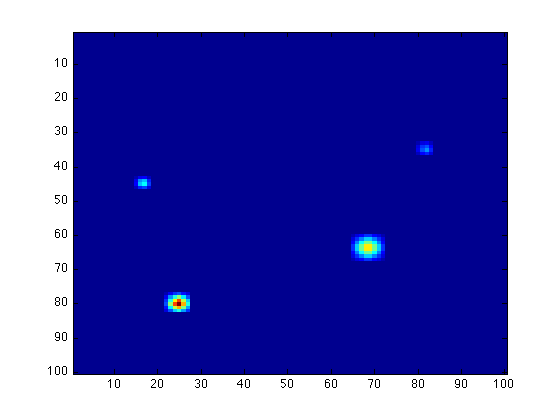

Image Processing: Graphical Input
Here we have a sample data array A which looks like dark sky with some bright stars:
imagesc(A)
This is the typical situation you may face: you have a very large data array with only a tiny part that are meaningful, and it takes a long time for you to find out where are those pixels which contain information you want. MATLAB provides a nice function called ginput, which allows you to obtain information from pixels you are interested in.
After the image is showed, type
ginput
and then you can select points from the figure using the mouse for cursor positioning (just click your mouse button when the cursor is on the point you want). After you select all points you want, press the Return key on your keyboard.
This returns the x- and y-coordinates of those points you have selected.
ans = 68.8180 63.8041 25.0392 80.1784 17.2051 44.7982 82.1820 35.4415
You can also specify the number of points you want to select:
ginput(2)
So that the function is automatically terminated after three points are selected.
ans = 68.8180 63.8041 25.0392 80.1784
If you want to save the coordinates for future use, you can save them in the vectors x and y:
[x, y] = ginput
x = 68.8180 25.0392 17.2051 82.1820 y = 63.8041 80.1784 44.7982 35.4415
Again, use the Reture key to terminate the input, or use
[x, y] = ginput(2)
to specify the number of points you want to select. The coordinate of the first point you select is (x(1), y(1)), the second is (x(2), y(2)), and so on.
x = 68.8180 25.0392 y = 63.8041 80.1784
For example, now you can calculate the distance between the first two points you select (in the unit of pixel length):
D_Horizontal = x(2) - x(1)
D_Horizontal = -43.7788
D_Vertical = y(2) - y(1)
D_Vertical = 16.3743
D = sqrt(D_Horizontal^2 + D_Vertical^2)
D = 46.7408
Note that, the first coordinate (x-) actually corresponds to the second dimension (column number) of the data array, and the second coordinate (y-) corresponds to the first dimension (row number). As a result, if you find the coordinate of a point is (a, b), then the location of this pixel in the data array is actually (b, a) (round down to integer).